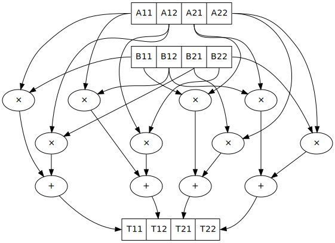

Imperative programming
Purity
[Pip97] compares a pure CBV Lisp to one extended with mutation operators. He presents a problem, an O(n) impure solution, and a pure O(n log n) solution that simulates the impure one with a balanced binary tree. But the key result of the paper is that a pure algorithm in his system will require O(n log n) time. His proof is a combinatorial argument based on the small number of Lisp operations. [BJM97] demonstrate that Haskell can solve the problem in amortized O(n) time, via the use of infinite lazy streams. [Benamram96] says (without proof) that any problem of the form read-update-write similarly has an efficient lazy stream implemention. This seems to encompass all Haskell 1.0 programs as they use lazy streams for I/O. Generally it seems the thunk update mechanism is powerful enough to simulate imperative programming, it just requires mind-bending contortions to program efficiently as one has to pass around a large self-referential partially evaluated data/control structure. But nobody has formally proved this.
Another way around Pippinger’s proof is to provide an O(1) pure “array update” operation. The naive implementation of pure array update copies the array (O(n) update) or maintains a tree structure (O(log n) access time). But [HB85] shows that the compiler can search through possible evaluation orders for an evaluation order that never accesses the old version of an array after updating, and transform the program to use O(1) destructive update (“automatic destructive update”). This works for the class of “single-threaded” FP programs, which include all the “natural translations” of imperative programs. Some of [Oka98]’s data structures can only be used single-threaded as well. Roc seems to be going down this route. For non-single-threaded FP, there is a log(log(n)) lower bound on persistent arrays [Str], which applies to both lazy and impure programs. So if we use automatic destructive update with a fallback to the log(log(n)) arrays we’ve gotten the best possible asymptotic performance.
Haskell avoided automatic destructive update because it seemed too complicated, and instead relies on monads. Monadic style guarantees single threading, hence matching the performance of imperative languages. Ocaml does something similar by allowing programs with side effects.
Similarly Clean has uniqueness types, but this disallows a simple example of implementing id in terms of const:
id = const x x
const x y = x
a = array [1,2,3]
b = id a
b !! 10
What’s slow are certain kinds of operations. E.g. dynamic lookups, weak typing, variant types. See examples of what makes PHP slow in this video. In some cases you can replace these operations with faster ones (specialization). JIT has more information and can specialize based on the observed values. Profile-guided ahead of time optimization can do the same thing but with the JIT the profiling is built in and you don’t have to do a separate build.
Also speed isn’t why people use languages.
State
Stroscot sees all programs as functional manipulations of immutable values. So a state or snapshot is a value. Conceptually a state could include a lot of things, including the state of the CPU, details of other running threads, the stock market, quantum fluctuations, etc. - all as long as it is within the chronological past. But since we are running on hardware we only care about the hardware’s state, and since the hardware is all digital it is deterministic and expressible as a long binary string.
This dump would include the kernel and I/O devices and other processes not related to ours. If we assume we are running as a user process then we can limit ourselves to the process state. Conveniently the CRIU project has a list of what’s in the state of a process: file descriptors, memory mappings and contents, network state, etc.
What operations are there on this state? Well, it’s a data structure, so we can read all we like. We can load the state with CRIU, step it forward a bit, and save it again. But we might run into syscalls. So stepping can either return another state, or call a syscall. Furthermore there are multiple threads in the process - so we could stop when the first thread hits a syscall, or when all of them do. Also we can return from sycalls, this is a well-documented calling convention.
So practically, the state can be represented by the next syscall, together with the state reached after returning from that syscall, if the syscall returns (the continuation).
Tasks
Tasks are a direct approach to I/O - sequences of I/O operations are values of type Task, similar to a free monad. Statements that don’t return are directly of the Task type, like Exit { code : Int}. Statements that continue in a sequential fashion have a continuation argument, like Print { s : String, continuation : Task }, so are of type Command = Task -> Task. Statements that return a value use a continuation of type a -> Task, e.g. ReadFile { path : Fd, continuation : String -> Task}, so are of type Operation a = (a -> Task) -> Task. And since tasks are values we can also use them as arguments, like the delayed_task in SetTimeout { delay : Int, delayed_task : Task, continuation : Task}.
To see how I/O works, consider printing hello world: print "Hi". As a task this looks like Print "Hi" exit, where exit is what happens after (the continuation). The operation is print a = \cont -> Print a cont. With the continuation as the last argument we can just use the partially-applied function, print = Print. print a >> print b = \cont -> Print a (Print b cont). Now consider read ref >>= print. The operation is Read ref >>= Print where >>= is the continuation monad’s bind operation, which expands to \cont -> Read ref (\v -> Print v cont).
So conceptually the “Hello World” program is simply the value Print "Hello World" (Exit 0). Except print isn’t a primitive operation, it’s more like:
Data "Hello, world!\n" (\msg ->
Block "_start" [Sys_write stdout (addr msg) (length msg) (Sys_exit 0)])
with Stroscot’s internal assembler language.
Task isn’t really a monad, but we can compose operations that return values using the continuation monad’s bind operation, as implemented with do-notation.
The datatype is similar to the “fudgets” mentioned in [Erk02], except we don’t have a pure constructor. Or this type FFI o i, but with control flow represented explicitly instead of using o or i parameters.
Continuations
Stroscot use continuations for its I/O model because continuations are simple and universal. They’re the supercharged typed equivalent of a goto. A continuation is a function that takes as argument “the rest of the program”, or “its future”. Executing a continuation fills in a skeleton program with this future - or it can discard the future if it is not relevant. The implementation can compile continuations to jumps under most circumstances and closures otherwise, so the execution model is also conceptually simple.
Continuations are the basis in formal denotational semantics for all control flow, from goto statements to exception handling, subsuming vanilla call flow, recursion, generators, coroutines, backtracking, and even loops along the way. This allows a uniform and consistent interface.
vs Monads
Continuations are the mother of all monads as all other monads can be embedded in the continuation type via m >>= and retrieved via f return. In particular the Codensity monad Codensity m a = forall b. (a -> m b) -> m b is a monad regardless of m. (See comment) Without the forall, callcc is implementable and the type is too large, see [Wad92] section 3.4 for an example.
Using the Codensity monad instead of a monad stack is often faster - the case analysis is pushed to the monad’s operations, and there is no pile-up of binds. It converts the computation to continuation-passing style. In particular free tree-like monads [Voi08] and MTL monad stacks are much cheaper when implemented via Codensity. As a contrary point, in the case of the Maybe monad an ADT version seemed to be faster than a Church encoding. Unfortunately hpaste is defunct so the code can’t be analyzed further. It’s not clear if the “CPS” mentioned is similar to Codensity.
vs Yoneda
Kmett says to use Yoneda (Rec f), i.e. newtype F f a = F { runF :: forall r. (a -> r) -> (f r -> r) -> r }, instead of Codensity f a. The claim is that this type is “smaller” than Codensity in the sense that the inhabitants of F are in a one-to-one correspondence with those of Free f a. But what we are interested in is f a; the recursive layering actually adds extra inhabitants as well, and there is also the Pure constructor that doesn’t make much sense for I/O. For example F Identity () is the type of Church numerals, while Codensity Identity () = forall r. r -> r = () = Identity (). So in this case it is actually F that is larger.
Just looking at the types, F has more arrows. Similarly compare the instances:
-- F f
return a = F (\kp _ -> kp a)
F m >>= f = F (\kp kf -> m (\a -> runF (f a) kp kf) kf)
-- C f
return x = C (\k -> k x)
m >>= k = C (\c -> runC m (\a -> runC (k a) c))
The instance for C is fewer characters.
Finally there is [RJ14] which derives the Codensity monad from the Yoneda lemma and the assumption that f is a small functor. Whereas the Yoneda-Rec seems to have no category theory behind it.
Generally it seems that the Yoneda thing solves a problem Stroscot doesn’t have.
vs multi-prompt delimited continuations
Multi-prompt delimited continuations are described in [DPJS07] . These might appear more expressive than standard delimited continuations (the (a -> b) -> b type), but as the paper shows multi-prompt continuations can be implemented as a monad and hence as a library to use with the standard continuations. So the simplicity of the standard continuations wins out. With the multi-prompt continuations you have to have a unique supply and a stack. The unique supply complicates multithreading, and the stack can overflow and requires care to handle tail recursion. Whereas standard continuations translate to pure lambdas, and tail recursion is dealt with by the host language’s semantics.
vs world token
Haskell uses a state monad IO a = s -> (# s, a #)) for implementing I/O, where s = World is a special zero-sized token type. Clean is similar but s = *World has the uniqueness type annotation so the state tokens cannot be forged. Regardless, this approach seems quite awkward. Programs like (a,_) = getChar s; (b,s') = getChar s; putChar (a,b) s' that reuse the world are broken and have to be forbidden. Ensuring this holds during core-to-core transformations requires many hacks. Also, an I/O operation is an abstract function which makes it quite difficult to inspect IO values or implement simulations of I/O such as PureIO.
With the task+continuation approach an I/O operation is data that can be pattern-matched over. It’s a little harder for the compiler to optimize that readIORef has no observable side effects, as it’s a reordering property (commutativity), but strict languages have been doing this for years.
vs algebraic effects
The two approaches are quite similar, both using a data type to represent operations. But continuations are much simpler syntactically than the handler functionality. In the effect approach computations are not first-class values.
OTOH effect types are quite useful, because you can define code that is polymorphic over the effect type, hence can be used as both pure and impure code. They use a monadic translation, I think with the lazy identity monad you can recover lazy pure code.
vs Call by push value
CBPV has “values” and “computations”. The original presentation has these as separate categories, but [EMS14] presents an alternative calculus EC+ where every computation type is also a value type. There is exactly one primitive that sequences computation, M to x. N, which acts like the monadic bind M >>= \x -> N, and similarly there is return. And the evaluation is CBV. So stripping away the thunk stuff it seems to be a disguised version of monads. And the thunk stuff is a rather fragile way to implement CBN - it doesn’t generalize to call by need. [MM19] And then there is jump-with-argument (JWA) which uses continuations and is equivalent to CBPV.
vs Applicative
Uses of Applicative can always be rewritten using the laws to be of the form pure f <*> a <*> b ... <*> d (<*> is left associative). So the idiom bracket behavior is covered by variadic functions, variadic f a b ... d.
The other way is to use the Cayley representation of Applicative, Rep f a = forall a. f a -> f (b,a). [RJ14] This still has a Functor constraint so actually we work with Rep (Yoneda f) a for a typeclass-free representation. (Yoneda f a = forall b. (a -> b) -> f b, see here <https://fa.haskell.narkive.com/hUgYjfKJ/haskell-cafe-the-mother-of-all-functors-monads-categories#post3>)
“Unsafe” I/O
Haskell also has runST and unsafePerformIO that allow turning impure computation into pure computations. These can still be implemented as special functions. runST scrutinizes its computation for impure behavior such as printing or returning allocated references, while unsafePerformIO does not and exposes the internal evaluation order.
If one wants to understand the evaluation order or is dealing with commutative operations, these functions are quite useful, e.g. Debug.Trace.trace looks like a non-I/O function but actually outputs something on the console, and allocation can be done in any order.
Concurrency
The general idea with concurrency is there are multiple threads of execution, each thread composed of (imperative) operations, and the combination of various operations may have various semantics. Normally we run in an OS thread and use a combination of hardware and OS operations. Working in the cloud, we still run in an OS thread, but the operations use the networking stack. In an embedded environment each thread is bound to a core. We only get the possibility of deadlock when we use blocking operations. With wait-free / atomic operations we never need to block.
The smallest examples runtimewise just have memory access. For example this program SB: [SSO+10]
x = mem 0
u = mem 0
A = mem 0
B = mem 0
t1 = fork {A := 1; x := !(read B) }
t2 = fork {B := 1; u := !(read A) }
join (t1, t2)
print (!(read x), !(read u))
Here the threads are provided by the C stdlib’s pthreads, and the operations are hardware load/store instructions.
This program has a race condition - the outcome may be (1,1), (1,0), or (0,1) under sequential consistency. But under the relaxed memory model used by X86 (Total Store Order or TSO) (0,0) is also possible. But under any model values other than 0 or 1 are not possible.
Another example is independent reads of independent writes (IRIW):
{a = X; b = Y}
{X := 1}
{Y := 1}
{c = Y; d = X}
Here the initial state is (X,Y)=(0,0), and the final state can be (a,b,c,d)=(1,0,1,0) under POWER. But both ARMv8 and x86 forbid this outcome.
Simulation
On a low level, race conditions are fine and an expected part of concurrent programming. No undefined behavior here. But on a program level Stroscot simulates the program’s (concurrent) execution, and will give a warning if it’s not consistent. The program is required to have the same result regardless of the order the tasks are run. This is checked by the verification system. Basically the simulation maintains a list of each thread and its top-level Task value. Each loop iteration takes some arbitrary non-zero number of arbitrarily-chosen tasks and runs their operations in parallel. The tasks operate on a shared state, so the semantics of satisfying the requests in parallel must be defined. We want to error when things clearly conflict.
Samples:
Variable: Two writes with different values conflict. But if only one task writes the variable or all writes are equal then no conflict.
Mutex: Two acquires, mutex available, a winner is nondeterministically chosen to be scheduled. The loser is blocked on the mutex or scheduled in a failure branch if it was try_acquire. No mutex available, block.
Append-style file writing: Conflicts if same file descriptor
Exiting: conflicts with anything but an identical exit (clean exit requirement), or else no conflicts
Etc. It’s a bit lengthy to simulate the entire task interface, but operations change infrequently, so it should be maintainable.
Acquiring a lock blocks until the lock is released. This introduces the problems of deadlock and starvation, which can be detected as the absence of progressing execution orders.
All of these generate happens-before relationships on the various operations. We could track this with vector clocks, IDK why - the posets are easier to reason about directly.
The verification system handles the nondeterminism somehow, check out papers on concurrency verification. The behavior of the OS scheduler is complicated and hard to abstract. The Linux scheduler might take an unreasonably long time to schedule you again even if every other thread is sleeping or calls yield(), handling other processes.
the relaxed-consistency model allows implementing private memory that is then mapped back to shared on synchronization
Parallelism
Parallelism - the root is “parallel” or “happening at the same time”. But with relativity, simultaneity is not absolute. We instead consider causal structure - event separation can be timelike or spacelike. Timelike separation communicates information from past to future, while no dependency is possible with spacelike separation. Hence we define an execution as a directed graph of information flow, where a node is a value and an edge is read “can casually influence” (we could also use the reverse “reads data from”). Assuming no time travel the graph is acyclic and its transitive closure forms a partial order or poset. Then things happen “in parallel” if neither causally influences the other.
For example, multiplying two 2x2 matrices:
The multiplications all happen in parallel and the additions in parallel.
There’s no explicit syntax for parallelism - pure computations have inherent parallelism. Writing it out looks like:
multiply a b =
(m,n) = dim a
(n' | n == n',o) = dim b
for [1..m] $ \i ->
for [1..o] $ \j ->
sum [ (a !! (i,k)) * (b !! (k,j)) | k <- [1 .. n] ]
for and sum can evaluate arguments in parallel. More complicated is allowing functions, for example foldMap f g (x:xs) = g (f x) (foldMap f g xs) generates a DAG of f’s and g’s if the list spine is known. Even with general recursion it should still be possible to identify data dependencies and assign DAG cells to temporary values in some fashion. Conditionals are a little hard to schedule because you have to make sure both sides can be speculated or discard the untaken branch promptly.
Stroscot schedules the instructions to maximize instruction-level parallelism, where appropriate. This takes advantage of the design of modern CPUs, where there are multiple “ports” and each port can execute an instruction simultaneously.
With large (>1000 width) matrices we might want to multiply sub-matrices on multiple threads (cores). That requires concurrency, so is handled by writing the synchronization operations explicitly. Stroscot doesn’t parallelize on the thread level by default because automatically spawning threads would be surprising, and the choice of thread/scheduler/performance model (OpenMP, OS thread, green thread) influences what granularity to split up the computation at.
But still, for complex data science type computations we might want automatic parallelization. So we can provide a DSL function parallelize to automatically rewrite pure computations to concurrent ones, implementing the “small on single thread, big splits into small” operations on top of fork/join model and taking the thread / task queue implementation as a parameter. Doug Lea’s work stealing task queues can be very efficient given the correct task granularity.
Haskell’s “par” is interesting, but too fine-grained to be efficient. You have to manually add in a depth threshold and manually optimize it. It’s just as clear to use explicit fork/join operations, and indeed the rpar/rpar/rseq/rseq pattern proposed in the Parallel Haskell book is just fork/join with different naming.
As far as the actual task granularity, Cliff says somewhere around the middle of the microsecond range is the break-even point, thousands of cycles / machine code instructions. Below that the overhead for forking the task exceeds the speedup from parallelism, but above you can make useful progress.
OS Model
An application consists of one or more processes. A process, in the simplest terms, is an executing program.
A job object allows groups of processes to be managed as a unit. Job objects are namable, securable, sharable objects that control attributes of the processes associated with them. Operations performed on the job object affect all processes associated with the job object.
One or more threads run in the context of the process. A thread is the basic unit to which the operating system allocates processor time. A thread can execute any part of the process code, including parts currently being executed by another thread.
Windows has a special thread type “UMS thread” which has more application control. An application can switch between UMS threads in user mode without involving the system scheduler and regain control of the processor if a UMS thread blocks in the kernel. Each UMS thread has its own thread context. The ability to switch between threads in user mode makes UMS more efficient than thread pools for short-duration work items that require few system calls.
A fiber / green thread / virtual thread consists of a stack, a small storage space for registers, and fiber local storage. A fiber runs in the context of a thread and shares the thread context with other fibers. Fiber switching is fewer OS calls than a full-on thread context switch. When fibers are integrated into the runtime they can be more memory efficient than threads, otherwise they do not provide many advantages over threads.
async marking makes core library functions more painful to call and requires a special annotation on the whole call chain. Avoid it by making everything async.